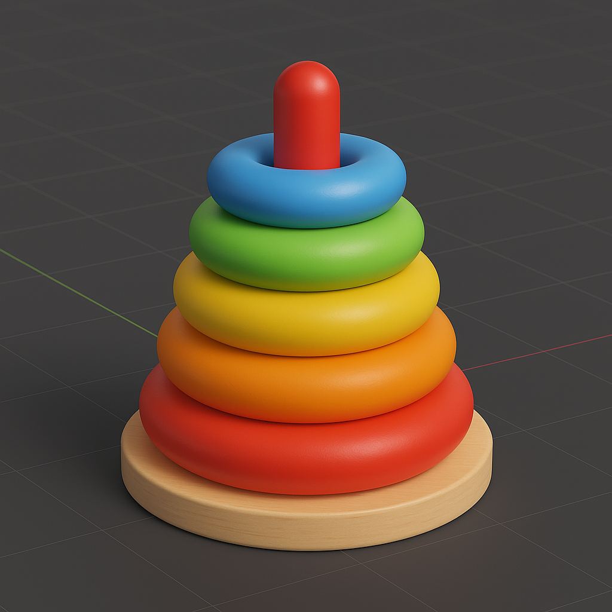

GRSПісля натискання G, R або S можна натиснути X, Y або Z, щоб обмежити дію однією віссю.
G → X — переміщення по осі XR → Z — обертання навколо осі ZS → Y — масштабування по осі YПісля вибору інструменту введіть точне значення:
G → Z → 5 — перемістити на 5 одиниць вгоруR → X → 90 — обернути на 90 градусів навколо XS → 2 — подвоїти розмірВідкрити за допомогою клавіші N або у правій частині вікна. Тут можна точно ввести координати, масштаб та обертання.
Активуються кнопками у верхній частині 3D-вікна або натисканням Shift + Space і вибором інструменту.
Завдання: Створіть іграшкову пірамідку із торів і циліндра:
G.N.